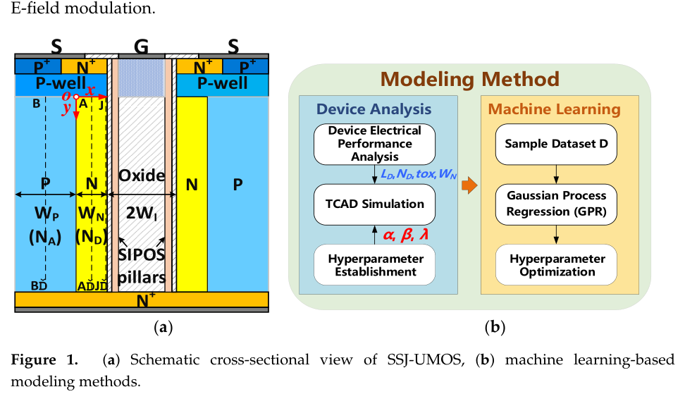
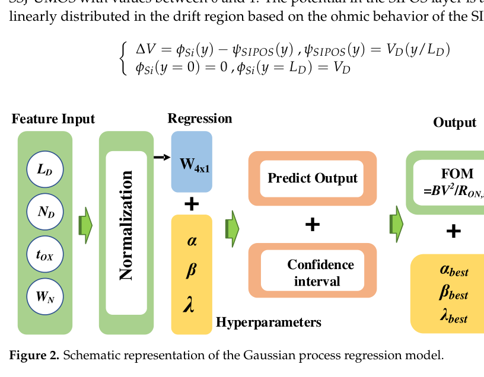

Paper Story · Micromachines · 2024
Figure-of-merit modeling for SIPOS U-MOSFETs
Machine Learning-Based Figure of Merit Model of SIPOS Modulated Drift Region for U-MOSFET
Micromachines, 15(3), 411 (2024)
Research question
The BV-RON,sp trade-off in SJ U-MOSFETs is influenced by electric-field modulation, charge coupling, and structural parameters; pure analytical models struggle to balance interpretability and accuracy.
Core method
The paper builds analytical expressions from Poisson's equation, uses GPR to predict FOM = BV²/RON,sp and tune parameters, and validates trends with TCAD.
Method steps
- Device physics
Analyze how SIPOS pillars affect drift-region electric fields and charge coupling.
- Analytical model
Derive FOM-related expressions from Poisson solutions.
- GPR correction
Use Gaussian process regression for prediction and parameter optimization.
- TCAD check
Validate BV-RON,sp trade-offs and parameter trends.
Main finding
Analytical physics and GPR can jointly model BV-RON,sp trade-offs while preserving interpretable device-parameter relationships.
Figures


SIPOS U-MOSFET Structure and Modeling Target
None · The figure introduces the SIPOS-modulated drift-region structure and the key device parameters.
The structure view helps readers connect FOM variation to the underlying device physics.
Source: Micromachines, 15(3), 411 (2024). © 2024 the authors. CC BY 4.0.
Figure reuse rights pending


GPR Prediction Model
None · The diagram shows how Gaussian process regression maps structural parameters to performance metrics.
GPR is useful in limited-sample TCAD settings because it can provide interpretable predictions and uncertainty cues.
Source: Micromachines, 15(3), 411 (2024). © 2024 the authors. CC BY 4.0.
Figure reuse rights pending
Why it matters
Combining analytical relationships with GPR predictions provides a modeling route for examining structural parameters and the breakdown-voltage/on-resistance trade-off.
Scope and conditions
Useful for readers interested in physics-informed ML: data is used to refine a physically structured model, not replace it.